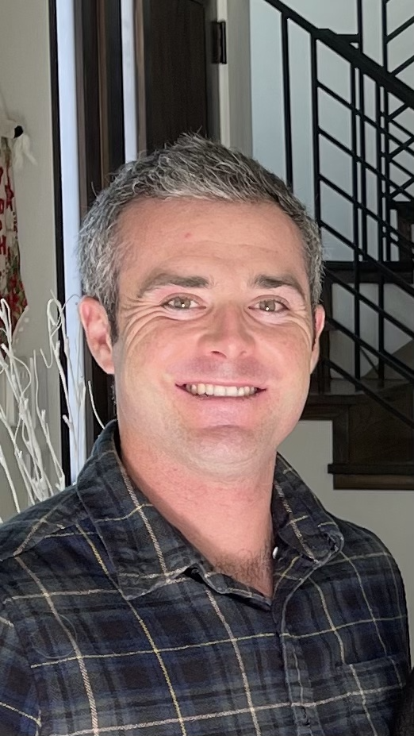

|  |
Tommy PurcellCivil Engineering Masters Student My Linkedin |
| Expected 2023 | Master of Science Civil and Environmental Engineering | University of California, Davis |
| Graduated 2019 | Bachelor of Arts | University of California, Davis |
Experience |
| Teaching Assistant |
| University of California, Davis |
| 2021-Present |
|
| Assistant Tennis Coach and Adjunct Instructor |
| Solano Community College, Fairfield CA |
| 2019-2020 |
|
| Tennis Professional |
| Cello International Tennis Academy |
| 2019-2020 |
|
Projects |
3-D Frame Analysis Coding Project (MATLAB)
|
Investigation and Forecast Models of Folsom Reservoir Storage Levels (Python)
|
Mechanical and Environmental Factors on Viability of Papercrete as an alternative to Concrete
|